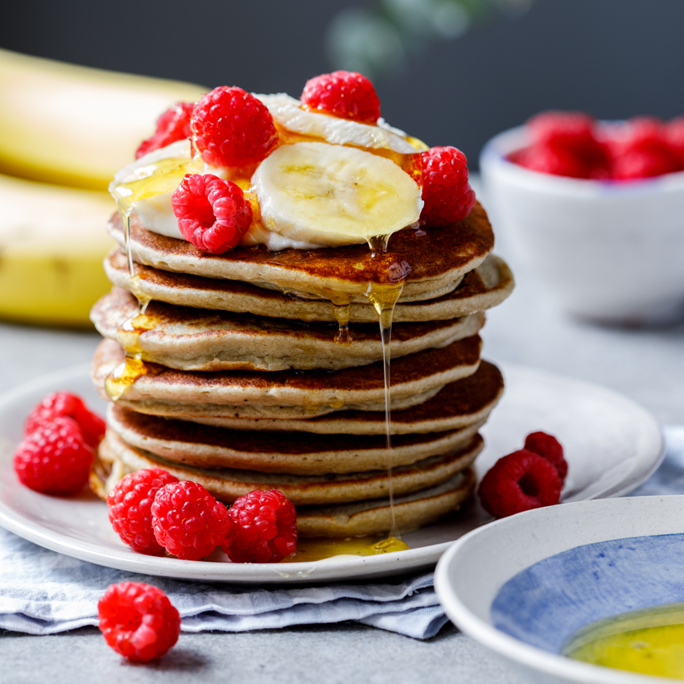

Banana Pancakes

Description
A recipe for the most delicious and healthy pancakes using only 3 ingredients.
Ingredients
- 1 whole riped banana
- 150g oat flour
- 2 eggs
Steps
- Put all of the ingredients into a blender and let it blend until it all mixes together.
- The dough should be thick but still a little liquidy.
- On a pen on medium heat, form little pancakes until cooked.
- Serve however you'd like.
- Voila, it's done. Enjoy!